Queues, Queueing and Ciw: Superpowers for Animators!
- Twitter: @alcarneyorg
- Blog: http://alcarney.org
- Slides: http://superpowers.alcarney.org
- Mercurial Repository: https://bitbucket.org/alcarney/blenderciw
What is Animation?
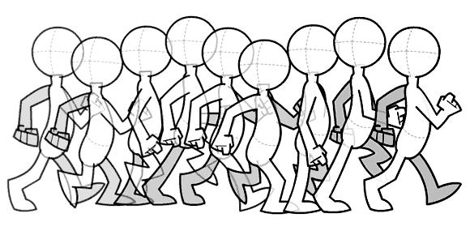.
Animation is creating the illusion of motion, using a rapid succession of still images.
- Give examples of animation:
- Flipbooks
- Stop Motion - Wallace and Gromit
- 3D Animation - Shrek, Toy Story
- Traditional Animation - Snow White, Lion King.
Traditional Animation
- Snow White, Cinderella, Lion King etc.
- Lead animator would draw 'keyframes' depicting important poses
- Junior animators would draw 'inbetweeners' creating the motion between the keyframes
What is Blender?

- Introduce Blender, model a car quickly.
- Show how to animate character - draw parallels to traditional animation
- Now bring up animating a character - time consuming.
- How are we going to get around this - for BACKGROUND animation?
- Queues!!
What is a Queue?
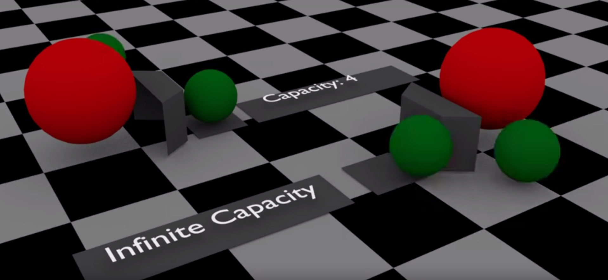- Explain what a queue is
- Where do we find them
- How it will help us with our animation
- If only there was a way to simulate these queues....
Cue Ciw!
- Demo Ciw in Jupyter Notebook
- Show the Getting Started with Ciw example from the documentation
- Switch to Blender and show how we would animate a single car by hand.
- Then introduce the API.
Duplicating an Object
# How many actors do we have? num_actors = len(bpy.data.groups['Actors'].objects) # Pick a random object to duplicate obj = bpy.data.groups['Actors'].objects[randint(0, num_actors - 1)] # Instance it mesh = obj.data actor = bpy.data.objects.new(obj.name, mesh) actor.location = (0, 0, -10) # Link it to the scene bpy.context.scene.objects.link(actor) return actor
The Follow Path Constraint
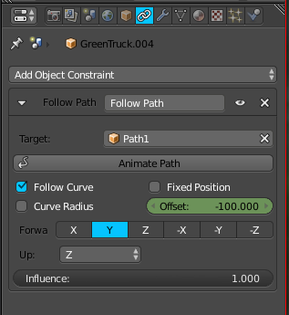constraint = actor.constraints.new(type='FOLLOW_PATH') constraint.target = bpy.data.objects['Path' + str(record['Class'])] constraint.use_curve_follow = True constraint.forward_axis = 'FORWARD_Y'
Offset Keyframes
def insert_offset_keyframe(obj, time, offset): # Set the new offset obj.constraints['Follow Path'].offset = offset # Record the keyframe obj.keyframe_insert( data_path='constraints["Follow Path"].offset', frame=time)
Location Keyframes
def insert_loc_keyframe(obj, time, loc): # Set the object's location obj.location = loc # Record the keyframe obj.keyframe_insert(data_path='location', frame=time)
Attempt 1
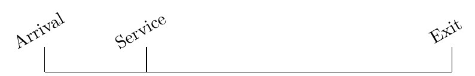Attempt 1
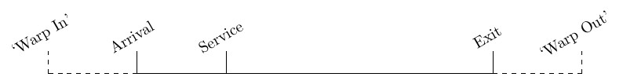Attempt 1
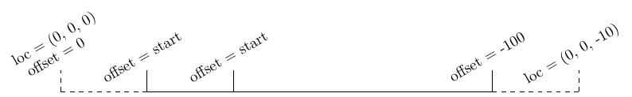Attempt 2
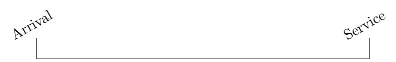Attempt 2
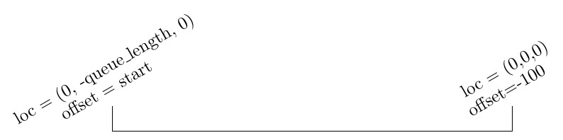Attempt 3
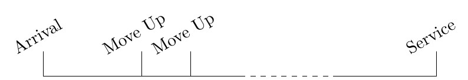Attempt 3
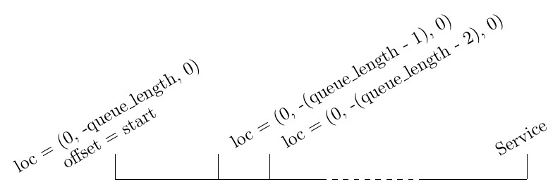Attempt 3.5
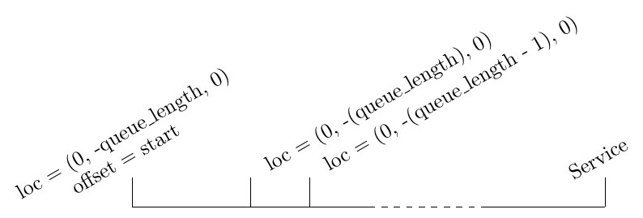Future Work
- Integrate Ciw into Blender
- Make networks composeable
- More complex animations
- Extract common code into some sort of library
Want to know more about....?
....Blender?
- Blender
- Blender Open Movies on Youtube
- BlenderNation
....Ciw?
- Documentation
- Ciw on Github
- Talk at PyConUK 2016